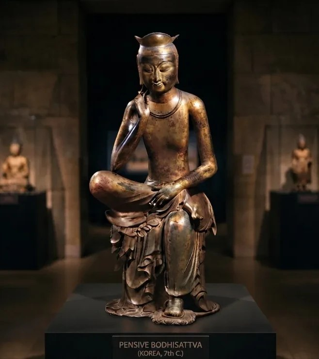

소리로 만나는 판 · 8장 · 약 15분

고른 장부터 시작합니다. 하지 않은 시련은 기본 점수를 받습니다.
달밤의 박물관 정원, 백 년 동안 턱을 괴고 굳어 있던 녹슨 청동상이 당신입니다. 유리장 속에는 작은 금동반가사유상, 사유가 있습니다. 수집가 유태양은 해가 뜨면 사유의 흠을 갈아 없애 새것처럼 팔려 하고, 흙손 영감은 흠과 흔적을 지키라고 합니다.
모두 8장입니다. 프롤로그 영상으로 이야기를 듣고, 사유의 모습을 손끝으로 만난 뒤, 두 시련 외눈 거인의 동굴과 청동 전시실(1방 · 2방)을 넘습니다. 마지막 제안에서 흠을 지킬지 고르고, 사유 만남에서 닿을 듯 멈춘 손끝에서 사유를 만납니다. 마지막에 점수에 따라 세 엔딩 가운데 하나를 봅니다.
성균관대학교 HCI 설계 D조 · 오규태, 공현민, 이건혁, Zhiqiang Shen
지도교수 · 조준동
은유 장면 Higgsfield(Seedance) · 목소리와 화면 해설 Gemini TTS · 일부 장면은 AI로 생성했습니다.
헨리 무어 연구소 《Beyond the Visual》 오디오 가이드 · documenta fifteen 프로젝트 아트 워크스 · 로렌스 아부 함단의 청각 작업(방법만) · 아론 맥피크 《Rings》 · documenta 6 발터 드 마리아 《수직 대지의 킬로미터》 · 팀랩 플래닛 · documenta 5 하랄트 제만.
그림과 글로 하는 원래 게임은 rjsgur63.github.io/banga-sayu 에서 할 수 있습니다.
사유의 목소리에 화면 해설을 더한 약 2분 10초 영상입니다.
사유가 들려주는 「반가워, 사유」 소개에 화면 해설을 더한 약 2분 10초 영상입니다. 해설은 남자 목소리, 사유는 여자 목소리입니다. 영상 속 게임 화면은 이 소리로 만나는 판의 화면입니다.